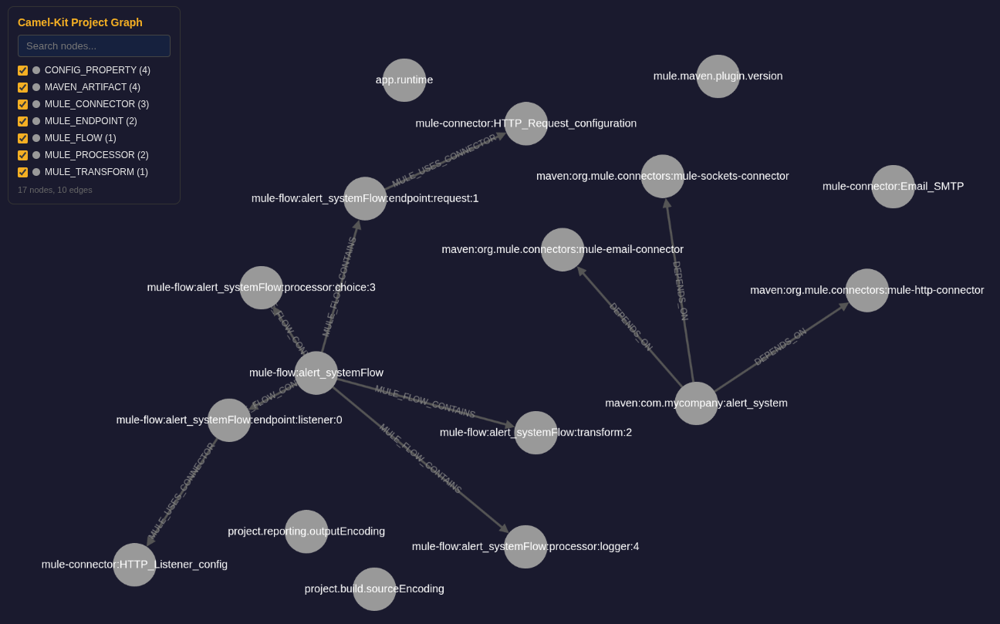

Graph intelligence
Camel Kit can build a property graph of an integration project: nodes for classes, routes, endpoints, beans, Maven artifacts and configuration properties, edges for inheritance, injection, route flow, bean references and configuration bindings. The graph feeds migration analysis, impact analysis, project-aware validation and retirement-candidate reporting. It is optional: every skill works without it, uses it when it is available, and skips the graph-enhanced steps silently when the CLI is unavailable. The graph enhances the agent; it never gates it.

How the graph is built
camel-kit graph generate runs nine content parsers and two post-processors and persists the result at .camel-kit/project-graph.json (another path with --output; queries take --graph-file). PomParser runs first and synchronously, because the other parsers need the Maven artifacts for runtime detection and for the dependency allowlist; the eight others then run in parallel on parser-local fragments that are merged in a fixed order, so the result does not depend on completion timing. Parser diagnostics record the scanned files, warnings, failures, timeouts and produced counts.
| Parser | Purpose | Files |
|---|---|---|
| Maven dependencies and properties, runtime detection |
|
| Classes, methods, fields, DI annotations, Java DSL routes |
|
| Groovy scripts and classes |
|
| Camel XML routes, recognized by the |
|
| Camel YAML DSL routes |
|
| Every application property, not only the |
|
| Mule 3.x and 4.x flows, sub-flows, connectors, endpoints, transforms, error handlers |
|
| DataWeave version, content types, functions, field access patterns |
|
| Orchestrations, maps, pipelines and bindings, through four StAX sub-parsers |
|
The post-processors run on the assembled graph: CrossLinker links producer and consumer routes through direct and seda endpoints, maps component usage to Maven artifacts, binds configuration to endpoints and creates the interface shortcuts described below; PropertyBindingParser then reads the property values for Camel’s PropertyBindingSupport syntax. Mule and BizTalk files are detected by their namespaces and extensions, so no configuration is needed; init --source-platform only hints the platform for unusual layouts. camel-kit graph visualize writes an interactive page to .camel-kit/project-graph.html.
Commands
| Command | Purpose |
|---|---|
Analysis | |
|
|
| Nodes by type, with a regular expression on the name or fully qualified name, falling back to the node ID |
| Incoming, outgoing or both directions, optionally filtered by edge type and depth |
| The shortest path between two nodes |
| The subgraph around a node, by breadth-first search with a depth limit |
Camel-specific | |
| The ordered |
| Bounded transitive reachability, up to 50 nodes per direction; |
| Route-to-route connections with the target route, endpoint scheme and URI |
| Structural retirement candidates: non-framework |
Context | |
| Route ID naming, error-handling coverage, property prefixes and route step-count norms, including the observed P75 |
| Property conventions, existing beans, dependency versions and the route directory |
| Upstream, downstream, classified endpoints and the error flow of a route |
| Bounded bidirectional context around a route for migration, see below |
Output | |
| Build or rebuild the graph from the sources |
| Render the interactive HTML visualization |
Every result is a candidate within the graph’s coverage, not proof: a dead-code entry means the graph found no path, not that the code is safe to remove. Regenerate the graph after source changes so queries reflect the current project.
Dependency-injection-aware analysis
JavaGraphParser understands injection across frameworks. Every field and constructor parameter of an allowed type creates a USES_TYPE edge, and @Inject or @Autowired marks that edge as an injection; @Component, @Service, @Repository, @Controller, @Named, @Singleton, @ApplicationScoped and @RequestScoped mark managed beans; @Value and @ConfigProperty create INJECTS_INTO edges from configuration properties to the fields that consume them. A POM-driven scope guard keeps the graph focused: USES_TYPE edges are created only for project-local classes, Apache Camel types and the framework types (Spring, Quarkus, Mule) found in the Maven dependencies, never for JDK types.
When class A injects interface I and class C implements I, CrossLinker adds a DEPENDS_ON_VIA_INTERFACE shortcut from A to C, and the traversal used by impact and migration-context crosses it. Without it, an upstream impact query on OrderServiceImpl returns nothing, because the route class only knows the OrderService interface; with it, the query returns the consumer classes, OrderRoute among them. impact follows incoming edges only, so the route’s endpoints are not part of that result: route-context or migration-context on the route shows its kafka source and direct:payment target.
PropertyBindingParser turns application.properties into part of the graph: #class: creates INSTANTIATES edges, #bean:, #autowired and #type: create REFERENCES_BEAN edges, #property: creates REFERENCES_PROPERTY edges, and placeholders in endpoint URIs create CONFIGURES edges to the matching properties. Spring Boot and Quarkus data source conventions become synthetic bean nodes, and Quarkus build-time properties are marked as such. A shared RuntimeDetector identifies Spring Boot, Quarkus, Camel Main or Karaf from the Maven dependencies; init persists the result in .camel-kit/config.properties.
Migration context
camel-kit graph migration-context <routeId> [--depth N]The command performs a bidirectional, interface-aware breadth-first search from one route (the ID without the route: prefix), with depth 3 by default and at most 50 expanded nodes, and returns structured JSON: the reached routes with their source endpoint and file, the deduplicated components, the services (bean class and name), the Maven artifacts, the properties with their outgoing edge type and target, and warnings for every reached node that was inferred rather than parsed. runtime comes from the project configuration. The result is focused local context, not a complete dependency map, and the command makes no MCP call: documentation, CVE or compatibility lookups are separate actions through the Knowledge server, using the reported components as input. See Graph analysis for how the migration uses it.
Background
The interface-consumer expansion and the bidirectional traversal follow the deterministic knowledge base approach of Chinthareddy, Reliable Graph-RAG for Codebases: AST-Derived Graphs vs LLM-Extracted Knowledge Graphs (2026), which found deterministic AST-derived graphs both more correct and far cheaper than model-extracted knowledge graphs for multi-hop questions on Java codebases. Camel Kit departs from the paper where Camel projects differ from self-contained applications: it parses with JavaParser rather than Tree-sitter, tracks framework types from the POM instead of project-local types only, models the Maven dependency layer and the component-to-artifact mapping, and treats property-based bean wiring and configuration-to-code links as part of the architecture.
Where the graph is used
-
/camel-migratecorroborates and accelerates its source analysis with the graph when one is current. -
camel-implementloadsproject-contextandcamel-testloadsroute-contextwhen a graph exists. -
/camel-validateconsumesproject-normsand includes thedead-codereport. -
/camel-startand/camel-knowledgedo not use it.